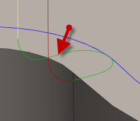

<div id="exit_distance"><p>コントローラの半径補正を無効にするには、直線退出移動の長さを指定します。</p>
<table class="tipTable" cellspacing="10">
<tr>
<td><center></center></td>
</tr><tr>
<td><center><p><b>直線退出距離</b></p></center></td>
</tr></table>
</div>